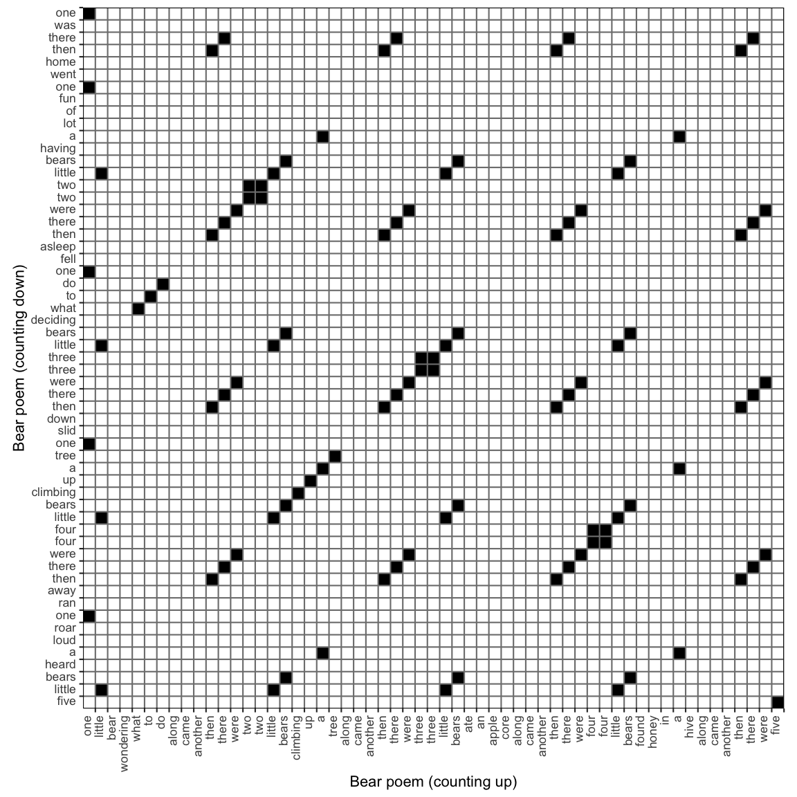
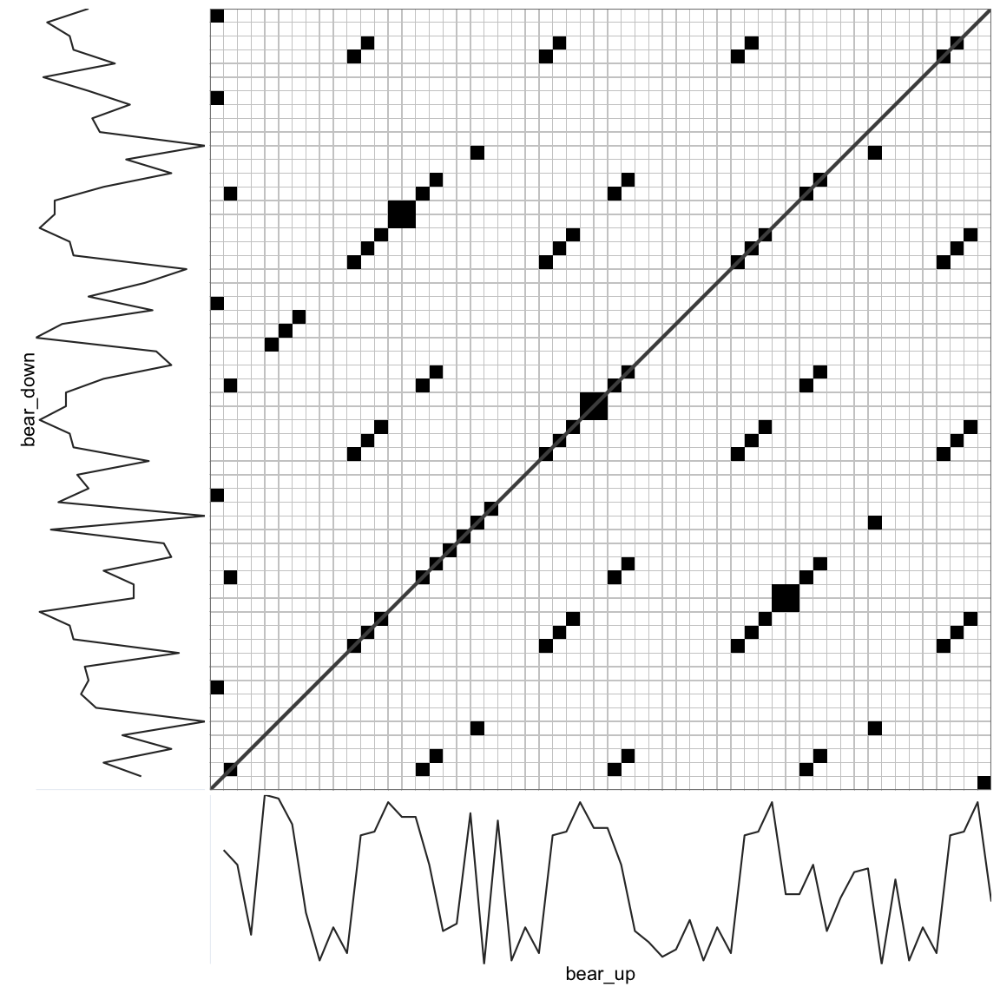

8.2 Categorical Cross-RQA
It is possible to evaluate the recurrences between 2 different time series, in which case the analysis is called Cross-Recurrence Analysis. The analysis is used to examine synchronisation and coupling dynamics, but the principle of quantification is exactly the same as for Auto-RQA, for all lags of time, count whether a value is recurring.
Consider another poem about bears, this time, we count down:
Five little bears
Heard a loud roar
One ran away
Then there were four!
Four little bears
Climbing up a tree
One slid down
Then there were three!
Three little bears
Deciding what to do
One fell asleep
Then there were two!
Two little bears
Having lots of fun
One went home
Then there was one!Let’s examine whether these two poems share similar patterns. The poems are of equal length (57 words), but because they contain different words, the values assigned to the unique words must index the unique words from both poems. This can again be done using the casnet function as.numeric_discrete(). Setting sortUnique = TRUE, will first sort the words (alphabetically) before they are assigned a number.
bear2 <- c("five little bears heard a loud roar one ran away then there were four four little bears climbing up a tree one slid down then there were three three little bears deciding what to do one fell asleep then there were two two little bears having a lot of fun one went home then there was one")
bear_updown <- as.numeric_discrete(c(unlist(strsplit(bear1," ")),unlist(strsplit(bear2," "))), sortUnique = TRUE)
bear_up <- bear_updown[1:length(bear_up)]
bear_down <- bear_updown[(length(bear_up)+1):length(bear_updown)]
plot(bear_up, type = "b", xlab = "Time", ylab = "Unique Word", pch = 16)
lines(bear_down, type = "b", col = "red", lty=2, pch = 16)Figure 8.2: Nominal Time Series.
The plot of the two series reveals that at some moments the same words occur at exactly the same time, because the lines overlap. What is less clear to see is whether there are patterns that are repeated with some delay.

This is a Cross Recurrence Plot, it is no longer symmetrical around the main diagonal, which is now called the Line of Synchronisation (LOS).
To get the Cross Recurrence Matrix, simply add the second time series as argument y2 to function rp(). The function rp_plot() will use the attributes attached to the Matrix object generated by rp() to determine the context of the analysis (Auto or Cross).
CRP <- rp(y1 = bear_up, y2 = bear_down, emLag = 1, emDim = 1, emRad = 0)
rp_plot(CRP, plotDimensions = TRUE, drawDiagonal = TRUE, drawGrid = TRUE, courseGrain = FALSE)
This now is a Cross-Recurrence Quantification Analysis, because we are evaluating recurrences across all lags of time between 2 time series. The interpretation of a recurring point and the line structures are now in terms synchronisation or coupling strength: A value or larger pattern observed in one time series may be observed to recur in the other time series. These recurrences can even be used to infer a direction of the coupling in terms of specific patterns of ‘leading’ or ‘following’ the interaction (see the section on Diagonal Recurrence Profiles).
The main output of the rp_measures() function is very similar to that of Auto-RQA.
bear_updown_out <- rp_measures(CRP, silent = FALSE)>
> ~~~o~~o~~casnet~~o~~o~~~
> Global Measures
> Global Max.points N.points RR Singular Divergence Repetitiveness
> 1 Matrix 3249 102 0.0314 21 0.143 0.296
>
>
> Line-based Measures
> Lines N.lines N.points Measure Rate Mean Max. ENT ENT_rel CoV
> 1 Diagonal 26 81 DET 0.794 3.12 7 1.1 0.272 0.532
> 2 Vertical 6 12 V LAM 0.118 2.00 2 0.0 0.000 0.000
> 3 Horizontal 6 12 H LAM 0.118 2.00 2 0.0 0.000 0.000
> 4 V+H Total 12 24 V+H LAM 0.118 2.00 2 0.0 0.000 0.000
>
> ~~~o~~o~~casnet~~o~~o~~~The output is again grouped into Global Measures and Line-based Measures. There are 102 recurring points in the matrix, now the main diagonal has to be included, points that fall on the main diagonal If we divide this on the size of the matrix (57 * 57 = 3192), we get a recurrence rate of 3.14%. There are 21 recurrent points that are not on any line.
8.2.1 Anisotropic and asymmetric categorical RQA measures
To see the asymmetry (or anisotropy) in the plot, look at the first few columns and the last few rows of the matrix. There is also a lot of symmetry in the plot. If these were data from 2 systems interacting, one could say their dynamics are probably coupled. In the present case the similarity occurs because the basic structure of the 2 poems is the same.
There are two sets of measures that quantify the asymmetry in the CRP:
Anisotropy ratio based on Horizontal and Vertical line measures (Cox, Steen, Guevara, Jonge-Hoekstra, & Dijk, 2016): The ratios are calculated as
(horizontal - vertical) / (horizontal + vertical), for example the anisotropic Laminarity ratio is:(H LAM - V LAM) / (H LAM + V LAM). A value of0means no anisotropy, negative ratios indicate the measures based on vertical lines had higher values, positive ratios indicate the measures based on horizontal lines had higher values. To get these measures incasnet::rp_measures(), set the argumentanisotropyHV = TRUE.Asymmetry ratio based on Upper and Lower triangles: The ratios are calculated as
(upper - lower) / (upper + lower), for example the asymmetric Determinism ratio is:(DET upper triangle) - (DET lower triangle) / (DET upper triangle) + (DET lower triangle). A value of0means no asymmetry, negative ratios indicate the measures based on the lower triangle had the higher values, positive ratios indicate measures based on the upper triangle had higher values. To get these measures incasnet::rp_measures()set the argumentasymmetryUL = TRUE.
bear_updown_out <- rp_measures(CRP, anisotropyHV = TRUE, silent = FALSE)>
> ~~~o~~o~~casnet~~o~~o~~~
> Global Measures
> Global Max.points N.points RR Singular Divergence Repetitiveness
> 1 Matrix 3249 102 0.0314 21 0.143 0.296
>
>
> Line-based Measures
> Lines N.lines N.points Measure Rate Mean Max. ENT ENT_rel CoV
> 1 Diagonal 26 81 DET 0.794 3.12 7 1.1 0.272 0.532
> 2 Vertical 6 12 V LAM 0.118 2.00 2 0.0 0.000 0.000
> 3 Horizontal 6 12 H LAM 0.118 2.00 2 0.0 0.000 0.000
> 4 V+H Total 12 24 V+H LAM 0.118 2.00 2 0.0 0.000 0.000
>
>
> Horizontal/Vertical line anisotropy
>
> Ratio N.lines N.points Measure Rate Mean Max ENT
> 1 H/V line measures 0 1 LAM 0 0 0 NaN
>
> ~~~o~~o~~casnet~~o~~o~~~The anisotropic ratios show there are an equal amount of horizontal and vertical lines in the plot, so the Laminarity Rate, Mean, Max and Entropy are also equal and the ratios are all 0. In the current context, the equal number of horizontal and vertical lines can be understood from the structure of the 2 poems, they both contain the repetition of the same counting words, for example: then there were three three little bears.
It is not the case that the two poems are each others mirror opposites, so some asymmetry should be expected, it’s apparently not present in the ratio between horizontal and vertical lines. In the present case we know the upper triangle represents recurrent points (repeated words) that occur at an earlier moment in “time” (position in the poem) in the counting up version which is on on the x-axis. The recurrent points in the lower triangle represent repeated words that occurred at an earlier position in the counting down version of the poem on the y-axis. In a synchronisation study one could use the ratios of RQA measures from the upper and lower triangle to indicate a coupling direction.
bear_updown_out <- rp_measures(CRP, asymmetryUL = TRUE, silent = FALSE)>
> ~~~o~~o~~casnet~~o~~o~~~
> Global Measures
> Global Max.points N.points RR Singular Divergence Repetitiveness
> 1 Matrix 3249 102 0.0314 21 0.143 0.296
>
>
> Line-based Measures
> Lines N.lines N.points Measure Rate Mean Max. ENT ENT_rel CoV
> 1 Diagonal 26 81 DET 0.794 3.12 7 1.1 0.272 0.532
> 2 Vertical 6 12 V LAM 0.118 2.00 2 0.0 0.000 0.000
> 3 Horizontal 6 12 H LAM 0.118 2.00 2 0.0 0.000 0.000
> 4 V+H Total 12 24 V+H LAM 0.118 2.00 2 0.0 0.000 0.000
>
>
> Upper/Lower triangle asymmetry
>
> Global Measures
> Global.Ratio N.points RR Singular Divergence Repetetiveness
> 1 U/L of points -0.0159 -0.0159 0.182 0 0.0577
>
>
> Line-based Measures
> Line.ratio N.lines N.points Measure Rate Mean Max ENT
> 1 D lines -0.0577 0.891 DET -0.0577 0.00483 0 0.00944
> 2 V lines 0.0000 1.000 V LAM 0.0000 0.00000 0 NaN
> 3 H lines 0.0000 1.000 H LAM 0.0000 0.00000 0 NaN
>
> ~~~o~~o~~casnet~~o~~o~~~The asymmetry ratios based on the upper and lower triangle indeed indicate asymmetry of the Global Measures and Diagonal line-based measures. There are more recurrent points in the lower triangle (64) than in the upper triangle (62). There are more singular points the upper triangle and determinism is higher in the lower triangle.
8.2.2 Diagonal (Cross) Recurrence Profiles
The diagonal recurrence profile (DRP) or more appropriate, the diagonal cross-recurrence profile (DCRP), is a representation of the distribution of recurrent points in a band around the line of synchronisation The figure below is from (Wallot & Leonardi, 2018)), it shows how the profile is calculated, the recurrence rate for each of the diagonals in the window is calculated.
![The Diagonal Recurrence Profile. [Fig. 8 from Wallot & Leonardi(2018)]](https://www.frontiersin.org/files/Articles/365352/fpsyg-09-02232-HTML/image_m/fpsyg-09-02232-g008.jpg)
Figure 8.3: The Diagonal Recurrence Profile. [Fig. 8 from Wallot & Leonardi(2018)]
The profile can be used to determine whether one time series is “leading”, or “following” the other series. A more general term would be coupling direction. In the current example, there are no real coupling dynamics between the poems, but there is a shared structure between them.
rp_diagProfile(CRP, diagWin = 32, doShuffle = TRUE, Nshuffle = 19, y1 = bear_up, y2 = bear_down, xname = "counting up", yname = "counting down")> Calculating diagonal recurrence profiles...
> Profile 1
> Profile 2
> Profile 3
> Profile 4
> Profile 5
> Profile 6
> Profile 7
> Profile 8
> Profile 9
> Profile 10
> Profile 11
> Profile 12
> Profile 13
> Profile 14
> Profile 15
> Profile 16
> Profile 17
> Profile 18
> Profile 19
> Profile 20
Figure 8.4: Diagonal Recurrence Profile produced by function rp_diagProfile()
#cat("{#fig:drp}")The profile shows there are peaks in recurrent points at the LOS as well as at particular intervals. To be a bit more certain these peaks are real and were not just incidental observations that occurred by chance, one can perform a simple surrogate analysis: One of the time series is randomised, that is, the order in which values appear in the series is shuffled. The CRQA analysis is repeated a number of times and the average of the diagonal recurrence profiles can be used to determine whether a peak is indeed larger than what may be expected based on chance. A one-sided test can be constructed by considering the rank-order of the observed values relative to the shuffled series. If the observed value is the highest among the distribution of 20 values the p-value is 1/20 = .05. A two sided test would require 39 surrogates, a rank 1 or 40 would yield 2/40 = .05.
8.2.3 Chromatic RQA measures
It is often the case that nominal time series data will consist of just a few categories, for example, the series might represent different behavioural categories coded from video recordings. When the data are transformed into a recurrence matrix all category information is lost, as we are only evaluating whether something recurred or not (not what is recurring).
There maybe situations in which it is interesting to calculate RQA measures for each individual category. This can be done using so-called Chromatic RQA (cf. Cox et al., 2016; De Jonge-Hoekstra, Van Der Steen, & Cox, 2020), which has been implemented in casnet through the argument chromatic in the function rp().
Below is a simple example of two nominal time series with 3 categories. These data could represent an interpretation of the behaviour of two children interacting with one one another during play. The time series data can be numeric or a character string describing each category which will be assigned a unique number. Note that the recurrence matrix now retains the category numbers, it is no longer a binary matrix.
y1 <- c("positive", "neutral", "neutral", "hostile", "hostile", NA, "hostile", "neutral", "positive", "positive", "positive", "positive", "neutral")
y2 <- c("neutral", "hostile", "neutral", "hostile", "hostile", "positive", "neutral", "neutral", "positive", "positive", "positive", "neutral", "neutral")
RP_chr <- rp(y1 = y1, y2 = y2, chromatic = TRUE)
# Chromatic Recurrence Matrix retains the label information
RP_chr> 13 x 13 sparse Matrix of class "dgCMatrix"
>
> [1,] . . . . . 3 . . 3 3 3 . .
> [2,] 2 . 2 . . . 2 2 . . . 2 2
> [3,] 2 . 2 . . . 2 2 . . . 2 2
> [4,] . 1 . 1 1 . . . . . . . .
> [5,] . 1 . 1 1 . . . . . . . .
> [6,] . . . . . . . . . . . . .
> [7,] . 1 . 1 1 . . . . . . . .
> [8,] 2 . 2 . . . 2 2 . . . 2 2
> [9,] . . . . . 3 . . 3 3 3 . .
> [10,] . . . . . 3 . . 3 3 3 . .
> [11,] . . . . . 3 . . 3 3 3 . .
> [12,] . . . . . 3 . . 3 3 3 . .
> [13,] 2 . 2 . . . 2 2 . . . 2 2When the matrix is plotted using rp_plot() the categories will have different colours in the plot and a legend will be added with the category names.
rp_plot(RP_chr, plotDimensions = TRUE, drawGrid = TRUE, courseGrain = FALSE)Figure 8.5: Chromatic Recurrence Plot
The output of rp_measures()) now provides measures for each category label separately.
rp_measures(RP_chr, anisotropyHV = TRUE, asymmetryUL = TRUE, silent = FALSE)>
> ~~~o~~o~~casnet~~o~~o~~~
> Chromatic RQA with categories: hostile, neutral, positive
> Global Measures
> Global Max.points N.points RR Singular Divergence Repetitiveness
> hostile Matrix 169 9 0.0533 7 0.500 6.0
> neutral Matrix 169 24 0.1420 20 0.500 7.0
> positive Matrix 169 20 0.1183 10 0.333 3.1
>
>
> Line-based Measures
> Lines N.lines N.points Measure Rate Mean Max. ENT ENT_rel
> 1 hostile Diagonal 1 2 DET 0.222 2.00 2 0.000 0.000
> 2 neutral Diagonal 2 4 DET 0.167 2.00 2 0.000 0.000
> 3 positive Diagonal 4 10 DET 0.500 2.50 3 0.693 0.270
> 4 hostile Vertical 3 6 V LAM 0.667 2.00 2 0.000 0.000
> 5 neutral Vertical 6 12 V LAM 0.500 2.00 2 0.000 0.000
> 6 positive Vertical 4 16 V LAM 0.800 4.00 4 0.000 0.000
> 7 hostile Horizontal 3 6 H LAM 0.667 2.00 2 0.000 0.000
> 8 neutral Horizontal 8 16 H LAM 0.667 2.00 2 0.000 0.000
> 9 positive Horizontal 5 15 H LAM 0.750 4.00 3 0.000 0.000
> 10 hostile V+H Total 6 12 V+H LAM 0.667 2.00 2 0.000 0.000
> 11 neutral V+H Total 14 28 V+H LAM 0.583 2.00 2 0.000 0.000
> 12 positive V+H Total 9 31 V+H LAM 0.775 3.44 4 0.687 0.268
> CoV
> 1 hostile NA
> 2 neutral 0.000
> 3 positive 0.231
> 4 hostile 0.000
> 5 neutral 0.000
> 6 positive 0.000
> 7 hostile 0.000
> 8 neutral 0.000
> 9 positive 0.000
> 10 hostile 0.000
> 11 neutral 0.000
> 12 positive 0.153
>
>
> Horizontal/Vertical line anisotropy
>
> Ratio N.lines N.points Measure Rate Mean Max ENT
> hostile H/V line measures 0.0000 1.000 LAM 0.0000 0.000 0.000 NaN
> neutral H/V line measures 0.1429 1.333 LAM 0.1429 0.000 0.000 NaN
> positive H/V line measures -0.0323 0.938 LAM -0.0323 -0.143 -0.143 NaN
>
>
> Upper/Lower triangle asymmetry
>
> Global Measures
> Global.Ratio N.points RR Singular Divergence Repetetiveness
> hostile U/L of points -0.455 -0.455 -0.714 0 -0.33333
> neutral U/L of points 0.037 0.037 -0.130 NaN NaN
> positive U/L of points -0.130 -0.130 0.000 0 -0.00478
>
>
> Line-based Measures
> Line.ratio N.lines N.points Measure Rate Mean Max ENT
> 1 hostile D lines 0.000 1.000 DET 0.000 0.0000 0.000 NaN
> 2 neutral D lines 1.000 Inf DET 1.000 1.0000 1.000 NaN
> 3 positive D lines -0.231 0.625 DET -0.231 -0.0323 0.000 0.0426
> 4 hostile V lines -0.333 0.500 V LAM -0.333 0.0000 0.000 NaN
> 5 neutral V lines 0.667 5.000 V LAM 0.667 0.0000 0.000 NaN
> 6 positive V lines -0.444 0.385 V LAM -0.444 -0.1304 -0.143 -0.2000
> 7 hostile H lines -0.333 0.500 H LAM -0.333 0.0000 0.000 NaN
> 8 neutral H lines 0.250 1.667 H LAM 0.250 0.0000 0.000 NaN
> 9 positive H lines 0.000 1.000 H LAM 0.000 0.0000 0.000 0.0000
>
> ~~~o~~o~~casnet~~o~~o~~~